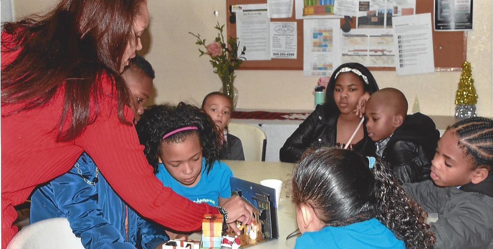
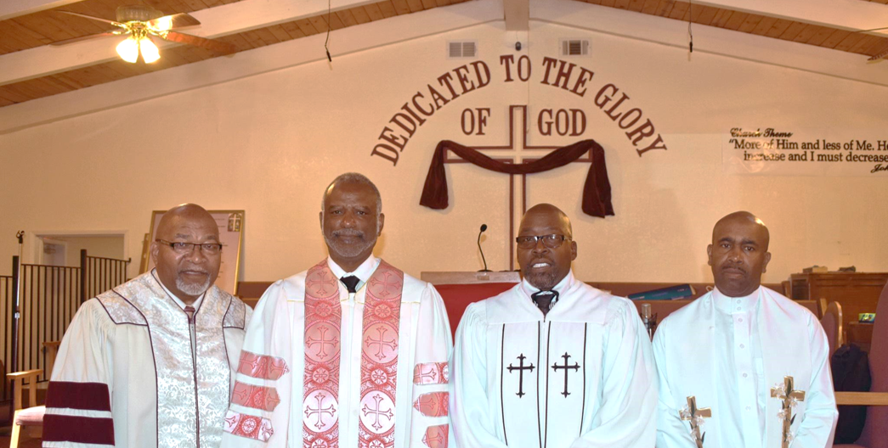
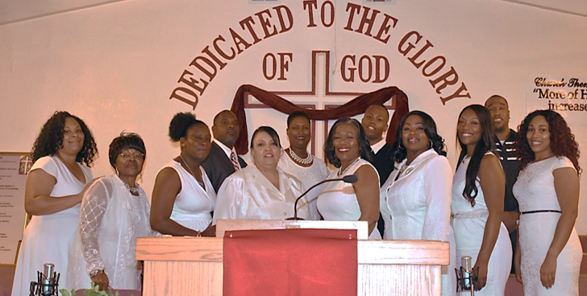

From the youngest of our children to the elders of our congregation, every member at Good News has a calling and a place to serve. Here is where you fit in.

The future is now. Our Children and Youth Ministry focuses on teaching and inspiring our young members' personal and spiritual growth in Christ. We provide a variety of programs to bring the best out of our children, in worship and in life.
From the cradle through high school, our kids are known by name, prayed over by leaders, and given real opportunities to lead in worship and serve the community.

The Men's Ministry is committed to making a difference and instilling moral and godly values within our families, our church, and our community. We do this through fellowship, accountability, study, and consistent service.
By hosting events throughout the year, the men of Good News have an opportunity to invite unsaved relatives and friends to participate in wholesome activities, in an atmosphere of love, joy, and fun. Many of those who have come out to our events have come to know the Lord Jesus Christ.

"Therefore go and make disciples of all nations, baptizing them in the name of the Father and of the Son and of the Holy Spirit..." Matthew 28:19
Want to share the joy of the Lord and make disciples of all nations? Join our Witnessing Team each week as they go out into the Tracy community and share the good news of Jesus Christ, face to face, neighbor to neighbor.
The Witnessing Team is for anyone the Lord has put a burden on for the lost, regardless of where you are in your own walk. Training and partnership are provided. You will not go alone.
The ministries above are our core. These are some of the other ways our church family serves and gathers throughout the year.